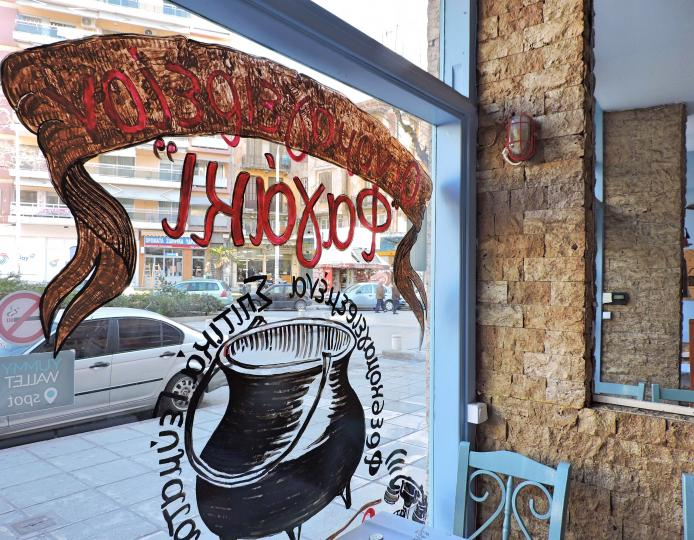
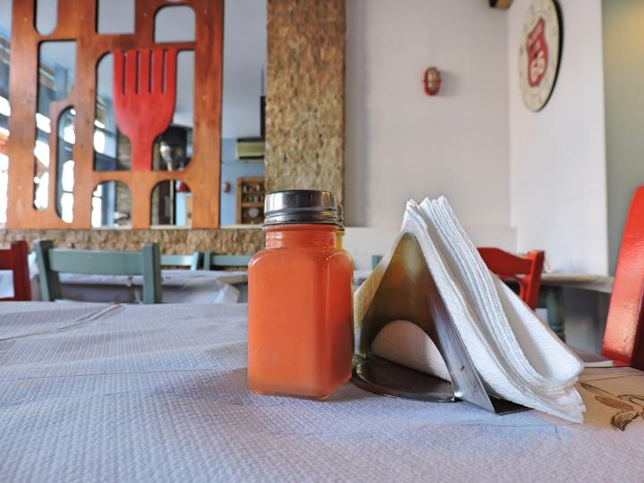
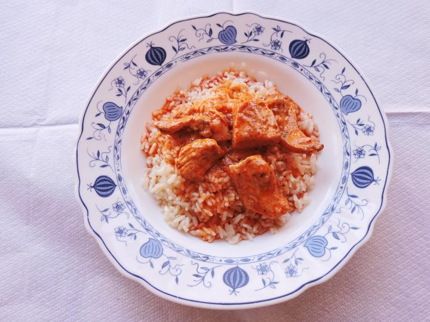

Όταν, το Σεπτέμβρη του 2016, τα αδέρφια Έλσα και Μάκης Μήσκου και η μητέρα τους Βάσω, μετέφεραν το μαγειρείο τους, το «Φαγάκι», από την περιοχή της Δημητρίου Γούναρη, στην Ολύμπου, στο ύψος του υπουργείου Μακεδονίας – Θράκης μετέφεραν, μαζί με την επιχείρηση, την αγάπη τους γι΄ αυτό που κάνουν.
Και προσφέρουν αυτό που, εκτός από να κάνουν εμπειρικά έχουν επίσης σπουδάσει, σε φοιτητές, εργαζόμενους, περιοίκους, περαστικούς, αλλά και σε όλο το κέντρο της Θεσσαλονίκης.

Στη τζαμαρία του μαγειρείου, σχεδιασμένο ένα τσουκάλι, να συμβολίζει τη μαγειρική που λαμβάνει χώρα στο εσωτερικό του. With a little help from their friends, έχουν στήσει το χώρο τους τα μέλη της οικογένειας... και είναι περήφανοι γι’ αυτό.
Μπροστά ανοιχτωσιά, με θέα στα αρχαία του Διοικητηρίου και την περατζάδα του δρόμου. Μπαίνεις μέσα και βρίσκεσαι σε έναν μικρό, χρωματιστό χώρο, όπου κυριαρχούν το ξύλο και οι ιδιόχειρες εμπνεύσεις και κατασκευές, με θέμα την κουζίνα και τη μαγειρική.

Πέντε μαγειρευτά φαγητά και τρία πιάτα της ώρας, αυτό είναι το μενού στο «Φαγάκι» τις καθημερινές.
Στα κλασσικά πιάτα τους, ελληνικές αγαπημένες συνταγές «της μαμάς»: εκπληκτικά λαζάνια με κιμά ή με κοτόπουλο και σπανάκι, παστίτσιο, χοιρινό με σάλτσα μουστάρδας, η σπέσιάλ τους κοτοτηγανιά με γιαούρτι, τομάτα και πάπρικα, κοτόπουλο φουρνιστό με μέλι και μυρωδικά, σουτζουκάκια σμυρνέικα. Στης «ώρας», σνίτσελ χοιρινό, μαριναρισμένα χοιρινά πανσετάκια και μαριναρισμένα φιλέτα στήθος κοτόπουλο.
Γεύσεις οικείες, που μας θυμίζουν τις μανούλες και τις γιαγιάδες μας, μερίδες μεγάλες, χορταστικές και με φροντίδα προετοιμασμένες.

Συνοδεύετε με σαλάτες εποχής, που η οικογένεια φτιάχνει καθημερινά, όπως ντάκο κρητικό, κοτοσαλάτα, πικάντικη, μαρούλι, κ.ά. Στα ποτά, πάλι, μπύρα «Άλη» Θεσσαλονίκης, Άλφα, Βεργίνα και δροσερό χύμα κρασί.
Κάθε Σαββατοκύριακο, πάλι, όλα αλλάζουν και το μόνο που «παίζει» είναι τα νόστιμα burgers του... «μπεργκεροweekend» τους. Για αυτά και μόνο, καταφτάνουν πελάτες ακόμη κι από εκτός Θεσσαλονίκης περιοχές για να επιλέξουν, κάθε φορά, μεταξύ τριών στάνταρ κι ενός «mystery» burger, που κάθε εβδομάδα είναι διαφορετικό.
Δοκιμάστε οπωσδήποτε το Blue Cheese Burger (με σάλτσα μπλε τυριού) και το Mushroom and swiss (με σως dijonaise), εφόσον το πετύχετε στα mystery. Τα burgers διατίθενται είτε σκέτα, είτε σε μορφή «γεύματος», με τηγανιτές πατάτες και χειροποίητη σαλάτα coleslaw - ομολογουμένως, από τις νοστιμότερες που έχουμε δοκιμάσει.
Σας προτείνουμε το «Φαγάκι» για το γεύμα στη δουλειά σας. Θα σας αποζημιώσει, σε όλα!
* Φαγάκι, Ολύμπου 62, τηλ.: 2315-005.131. Ανοιχτά: Δ. – Πα. 13.00 – 22.00, Σ. – Κ. 13.00 – 17.00. Καθημερινά λειτουργεί υπηρεσία delivery. Το καλοκαίρι, τραπεζάκια έξω.